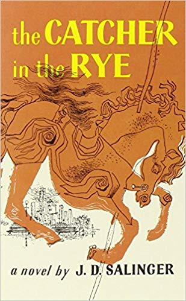
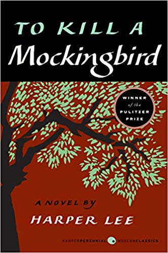
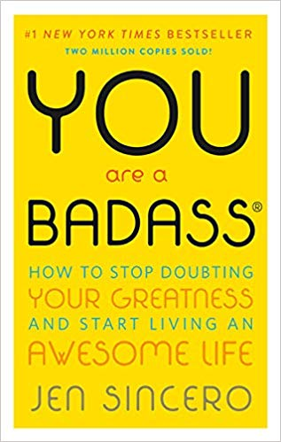
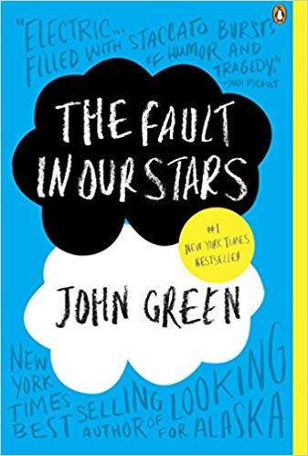

https://images-na.ssl-images-amazon.com/images/I/41LPBRNaVCL._SX355_BO1,204,203,200_.jpg
The Hunger Games
Suzanne Collins
In the ruins of a place once known as North America lies the nation of Panem, a shining Capitol surrounded by twelve outlying districts.
The Capitol is harsh and cruel and keeps the districts in line by
forcing them all to send one boy and one girl between the ages of twelve and eighteen to participate in the annual Hunger Games, a fight to the death on live TV.
This book is the first of the amazing trilogy. The writing is suspenseful and keeps you engaged. I read the book in less than 48 hours... highly recommend!
https://www.amazon.com/Hunger-Games-Book/dp/0439023483

https://images-na.ssl-images-amazon.com/images/I/91oNu%2BR7EUL.jpg
Divergent
Veronica Roth
One choice can transform you. Beatrice Prior's society is divided into five factions—Candor (the honest), Abnegation (the selfless), Dauntless (the brave), Amity (the peaceful), and Erudite (the intelligent). Beatrice must choose between staying with her Abnegation family and transferring factions.
This book is filled with action and anticipation! The written book is better than the movie! It one of my top 10 favorite books.
https://www.amazon.com/Divergent-Veronica-Roth/dp/0062024035

https://images-na.ssl-images-amazon.com/images/I/51EqnTkohBL._SX307_BO1,204,203,200_.jpg
Catcher in the Rye
J.D. Salinger
The hero-narrator of The Catcher in the Rye is an ancient child of sixteen, a native New Yorker named Holden Caufield. Through circumstances that tend to preclude adult, secondhand description, he leaves his prep school in Pennsylvania and goes underground in New York City for three days.
I was required to read this book in high school expecting to hate it miserably because I was REQUIRED to read it. This book ended up being oddly addicting.
https://www.amazon.com/Catcher-Rye-J-D-Salinger/dp/0316769487
https://images-na.ssl-images-amazon.com/images/I/41qI9quGIdL._SX324_BO1,204,203,200_.jpg
Fahrenheit 451
Ray Bradbury
Guy Montag is a fireman. In his world, where television rules and literature is on the brink of extinction, firemen start fires rather than put them out. His job is to destroy the most illegal of commodities, the printed book, along with the houses in which they are hidden.
Fahrenheit 451 is a classic novel. This book was also a required reading for a high school class, but it proves to be a fantastic read.
https://www.amazon.com/Fahrenheit-451-Ray-Bradbury/dp/1451673310

https://images-na.ssl-images-amazon.com/images/I/51IXWZzlgSL._SX330_BO1,204,203,200_.jpg
To Kill A Mockingbird
Harper Lee
It takes readers to the roots of human behavior - to innocence and experience, kindness and cruelty, love and hatred, humor and pathos.
This is a classic novel where Harper Lee hides many different life lessons throughout the book. I have read this book twice, and would read it again if I had the time!
https://www.amazon.com/Kill-Mockingbird-Harper-Lee/dp/0446310786

https://images-na.ssl-images-amazon.com/images/I/51xPIEYPWWL._SX326_BO1,204,203,200_.jpg
IT
Stephen King
Welcome to Derry, Maine. It’s a small city, a place as hauntingly familiar as your own hometown. Only in Derry the haunting is real.
Don't let the size of this book scare you! Once you begin the first page, Stephen King will have you hooked! It is scary and suspenseful and is a perfect read around Halloween!
https://www.amazon.com/Novel-Stephen-King/dp/1501142976

https://images-na.ssl-images-amazon.com/images/I/51r5X3h8IWL._SX315_BO1,204,203,200_.jpg
You are a Badass
Jenn Sincero
Identify and change the self-sabotaging beliefs and behaviors that stop you from getting what you want, Create a life you totally love. And create it NOW, Make some damn money already. The kind you've never made before.
This book caught my eye - not only by the yellow cover and swear word. Reading this book made me realize a lot about myself and what I should change in my daily lifestyle. It is a short, easy to read, life changing book.
https://www.amazon.com/You-Are-Badass%C2%AE-Doubting-Greatness/dp/0762447699
https://images-na.ssl-images-amazon.com/images/I/41uC8afJzvL._SX306_BO1,204,203,200_.jpg
Twilight
Stephenie Meyer
Isabella Swan's move to Forks, a small, perpetually rainy town in Washington, could have been the most boring move she ever made. But once she meets the mysterious and alluring Edward Cullen, Isabella's life takes a thrilling and terrifying turn.
Twilight is better on page than on screen. It conveys romance, mystery and action. The character development in this novel is amazing!
https://www.amazon.com/Twilight-Saga-Book-1/dp/0316015849
https://images-na.ssl-images-amazon.com/images/I/51J9e5B%2BvdL._SX325_BO1,204,203,200_.jpg
People of the Book
Geraldine Brooks
When it falls to Hanna Heath, an Australian rare-book expert, to conserve this priceless work, the series of tiny artifacts she discovers in its ancient binding-an insect wing fragment, wine stains, salt crystals, a white hair-only begin to unlock its deep mysteries and unexpectedly plunges Hanna into the intrigues of fine art forgers and ultra-nationalist fanatics.
This book is mysterious and shows some aspects of ancient history. Not my all time favorite book, but showed great promise and intelect!
https://www.amazon.com/People-Book-Novel-Geraldine-Brooks/dp/0143115006

https://images-na.ssl-images-amazon.com/images/I/51ED6WxFy8L._SX335_BO1,204,203,200_.jpg
The Fault in our Stars
John Green
Despite the tumor-shrinking medical miracle that has bought her a few years, Hazel has never been anything but terminal, her final chapter inscribed upon diagnosis. But when a gorgeous plot twist named Augustus Waters suddenly appears at Cancer Kid Support Group, Hazel’s story is about to be completely rewritten.
This book combines humor with real life challenges young teens experience when being diagnosed with cancer. The book and movie were both phenomenal. This book will make you laugh and bring you to tears! One of my favorite books of all time.
https://www.amazon.com/Fault-Our-Stars-John-Green/dp/014242417X